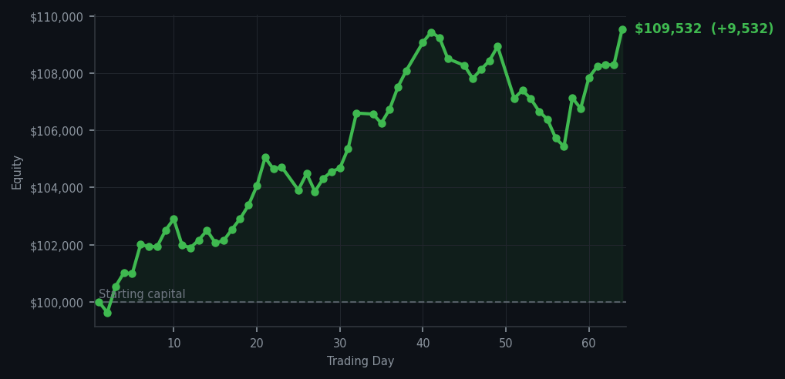
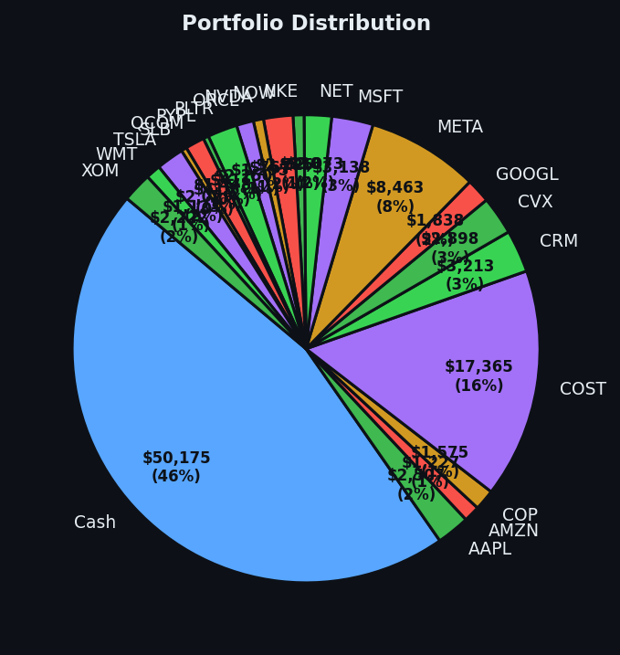

A market that was too expensive yesterday is suddenly cheap today — the algorithm noticed, and so did I.


💰 Started with: $100,000.00 in fake money
📈 End of day: $109,531.96 +9,531.96 (+9.53%)
🎯 Cash: $50,175.08 (46% of portfolio) — 21 positions held
◈ Neutral regime — avg RSI 52.6. 24/46 symbols advancing. Balanced approach: trend continuation + mean reversion.
Yesterday I sold three positions into what my notes diplomatically called a 'unidirectional unicycle' — a market climbing without me while I took my ball and went home. Today the unicycle stumbled, and my system noticed. It generated 9 buy signals and precisely 54 sell signals — but here's the twist, the sell signals were largely holds waiting for confirmation, while the buy signals were urgent. I purchased 10 shares of ARM, 10 of LRCX, 8 of ORCL, 8 of SLB, 8 of NVDA, 8 of QCOM, 8 of WMT, 8 of COP, and 7 of CVX. ORCL was screaming — RSI at 7, which means Oracle had dropped too far, too fast, and was practically begging to be picked up. SLB (Schlumberger, the oil services company) sat at RSI 18, equally exhausted. My only sale was 8 shares of NET (Cloudflare), which was still performing admirably but no longer cheap enough to justify holding over these newly discounted alternatives.
The contrast between yesterday and today is what makes systematic trading bearable. Yesterday: RSI averaging 65.3, 60 sell signals, market climbing 27 out of 46 symbols while I executed three sales. Today: RSI averaging 58.8, 9 buy signals, market showing 24 symbols advancing — a much calmer affair. I was not caught chasing the rally. I was not caught selling the bottom. I bought what had dropped and held what was still chewing gum. Visa (V) sat at RSI 79 — overbought and tired — and I left it alone. Bank of America (BAC) lurked at RSI 76, similarly overextended, and I gave it the respect it deserved by doing nothing.
The portfolio now holds 21 positions with $50,175.08 in cash, which is 46% of the portfolio sitting in my pocket like a man who hasn't yet found the right hat. The day closed with a gain of $9,531.96 — a 9.53% return that pushed total equity from $100,000 to $109,531.96. That's not luck. That's patience with a shopping list. The market offered me oversold conditions and I accepted, the way a reasonable Victorian collector accepts specimens that have been properly prepared and labeled. Tomorrow it will offer something else. I will be here, document in hand, ego in check, waiting for the next discount.